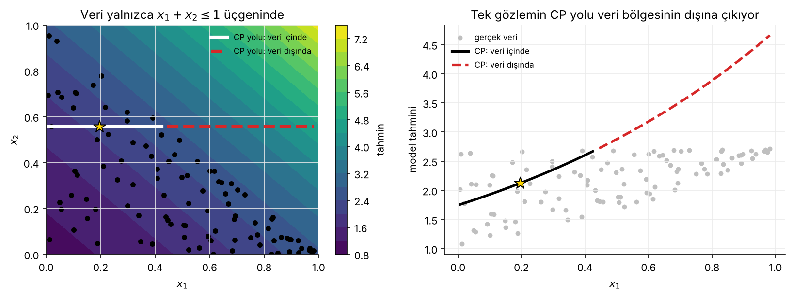
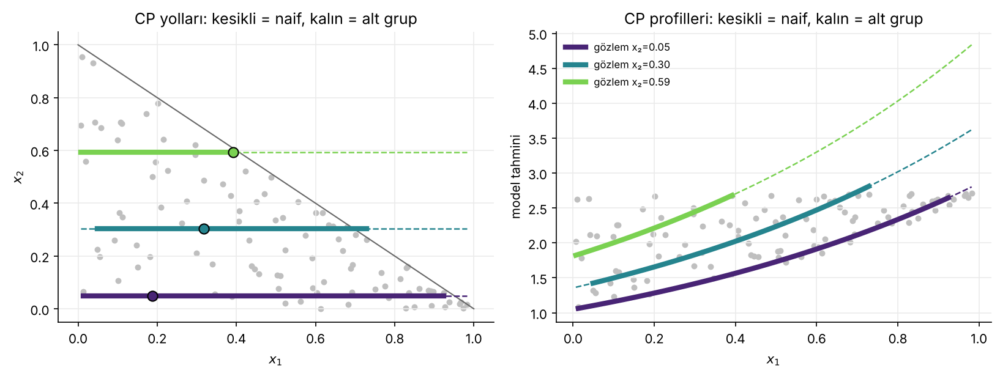
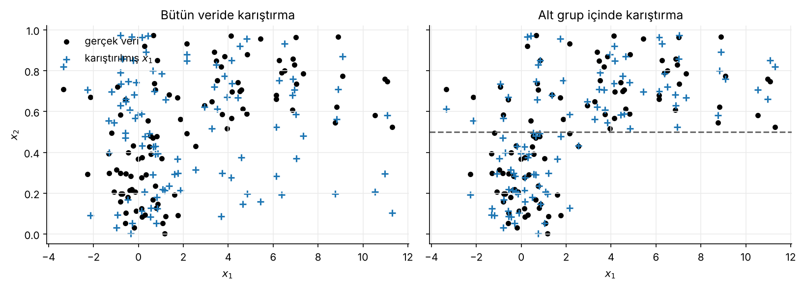
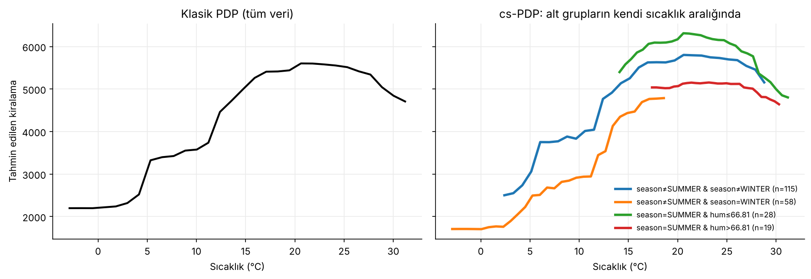
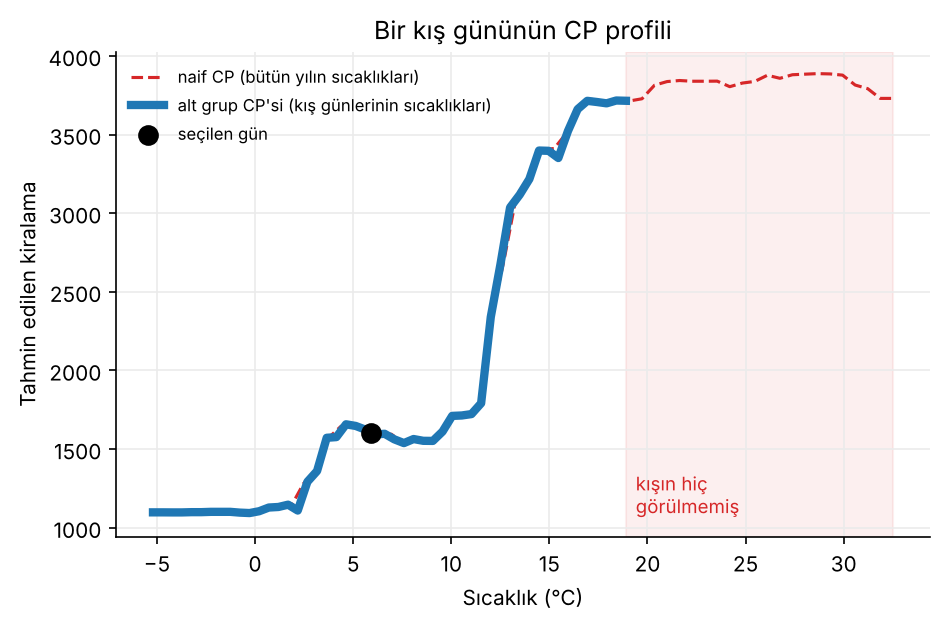
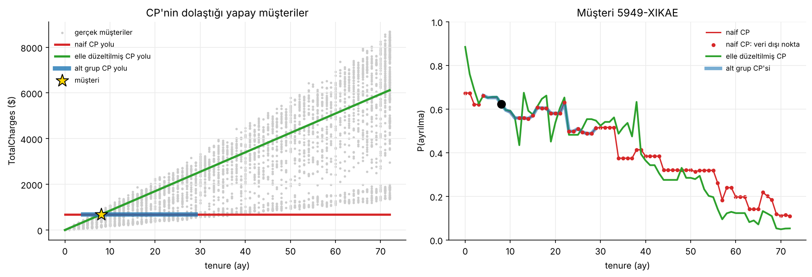
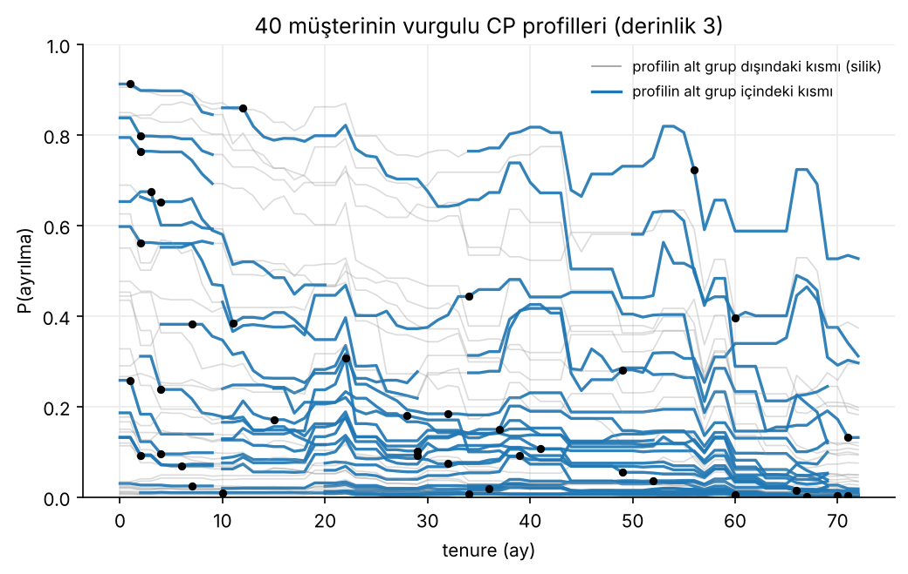
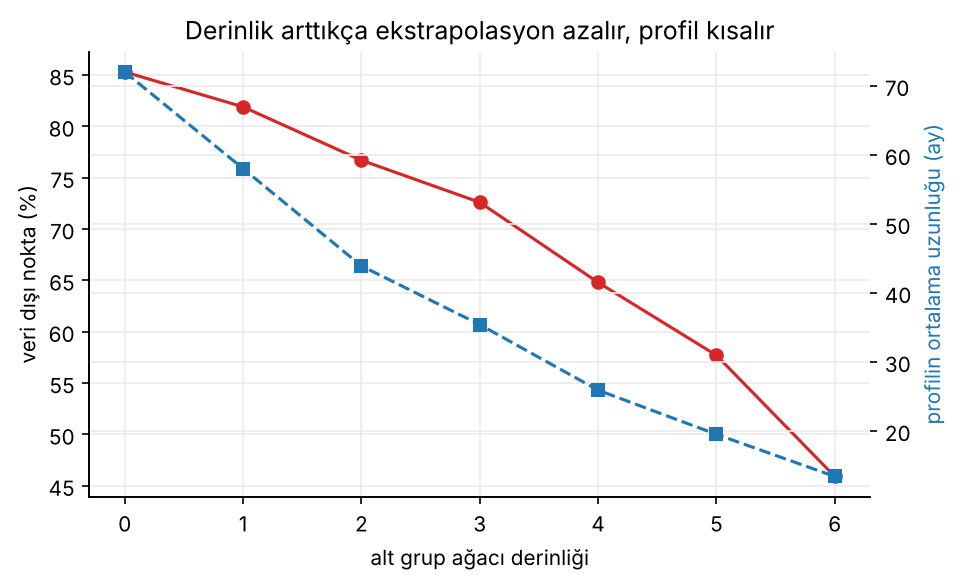

Bölüm 12 / Ceteris Paribus
Makale Yeniden Üretimi: Koşullu Alt Gruplarla Ceteris Paribus
Öğrenci: Serap Şahin (20269348009)
İlgili bölüm: Molnar, Interpretable Machine
Learning, Bölüm
12 – Ceteris Paribus Plots
İzlencedeki tür: Seçenek 2: Kıyaslama (standart CP ile
alt grup CP’si). Makale yeni bir varyant önerdiği için Seçenek 3 ile de
ilişkili; ancak katkısı hız veya stabilite değil, veri bölgesinin dışına
düşen sorguları azaltmak.
Makale
Molnar, C., König, G., Bischl, B. ve Casalicchio, G. (2024). Model-agnostic Feature Importance and Effects with Dependent Features: A Conditional Subgroup Approach. Data Mining and Knowledge Discovery, 38(5), 2903–2941. https://doi.org/10.1007/s10618-022-00901-9 · arXiv: 2006.04628
Yazarların kodu (R): github.com/christophM/paper_conditional_subgroups
1. Neden bu makale?
Ceteris paribus (CP) profili tek bir gözlem için şu soruyu sorar: “Diğer her şey sabitken bu öznitelik değişseydi model ne tahmin ederdi?” Öznitelikler birbirine bağlıysa “diğer her şey sabit” varsayımı gerçekte olmayan veri noktaları üretir. Model bu noktalarda eğitim verisi görmemiştir; buradaki tahminler veriyle desteklenmez ve doğru olup olmadıklarını veriden kontrol edemeyiz.
Bölüm 12 uygulamamda bunu Telco verisinde ölçtüm:
5949-XIKAE müşterisinin tenure profilinde
noktaların %90’ı en yakın gerçek müşteriden uzak
düşüyordu, çünkü TotalCharges ≈ tenure × MonthlyCharges.
Uygulamada sorunu ilişkiyi elle yazarak düzeltmiştim.
Bu makale aynı sorunu ilişkiyi bilmeden, veriden
öğrenerek azaltmayı öneriyor. Bu yüzden Bölüm 12’nin doğal
devamı.
Kitabın yazarı makalenin de ilk yazarı. Hooker, Mentch ve Zhou (2021) aynı ekstrapolasyon sorununu ICE eğrilerinde gösteriyor (Şekil 6); o makaleyi PR 36’da Bölüm 23–24 için başka bir öğrenci yeniden üretti. Bu çalışma sorunu göstermekle kalmayıp onu azaltmayı amaçlayan bir yöntemi yeniden üretiyor.
2. Yöntem
Adım 1 – Alt gruplar. İlgilenilen öznitelik , diğer öznitelikler kullanılarak bir karar ağacıyla tahmin edilir. Ağacın her yaprağı bir alt gruptur . Ağaç, yaprak içinde ’nin dağılımını daraltmayı hedefler; böylece ’nin diğer özniteliklere bağımlılığı azalır. Bu, yaprak içinde bağımsızlığın garantisi değildir.
Adım 2 – Alt grup içinde değiştirme. Gözlem ’nin düştüğü yaprak ise, profil yalnızca o yapraktaki gerçek değerleri üzerinde hesaplanır:
Alt grup PDP’si (cs-PDP) bunun yaprak içindeki ortalamasıdır. Makale aynı fikri permütasyon önemine (cs-PFI) de uyguluyor; bu çalışma etki/profil tarafına odaklanıyor.
Makale PDP üzerinden anlatıyor; bu çalışma neden CP
düzeyinde? Makale yöntemi PDP ve PFI için sunuyor. Ancak PDP,
CP profillerinin ortalamasıdır
()
ve ekstrapolasyon her bir profilde ortaya çıkar. Yöntemde alt grup zaten
her gözlem için ayrı belirlenir; cs-PDP, gözlemlerin
alt grup CP profillerinin ortalamasıdır. Yazarların kodunda da tek
gözlemli profilleri alt grup modeline göre vurgulayan bir fonksiyon var
(R/highlighted_ice.R). Bu çalışma yöntemi ortalama almadan,
tek gözlem (CP) düzeyinde uyguluyor. PDP yalnızca makalenin bisiklet
şeklini yeniden ürettiğim yerde (Bölüm 3.3) geçiyor.
Makaleden farkım. Makale ağaç olarak
transformation tree (trtf paketi) kullanıyor; bu
ağaç
’nin
bütün koşullu dağılımına göre böler. Python’da hazır bir karşılığı
olmadığı için CART kullandım. Yazarların kodu da CART seçeneğini
destekliyor (fit_conditionals(type = "cart")). En küçük
yaprak büyüklüğü makaledeki gibi 30.
3. Yeniden üretilen sonuçlar
Kod: analiz.ipynb. Sayılar
Bölüm 7’deki paket sürümleriyle yapılan çalıştırmaya aittir. Dosyalar ve
çalıştırma için Bölüm 7’ye bakınız.
3.1
Motivasyon örneği (experiments/examples-motivation.R)
, , , . Veri üçgeninde. Makale bu örneği PDP ile gösteriyor; ben tek gözlemin CP profiliyle gösterdim:
- olan bir gözlemin CP yolunun %56’sı üçgenin dışında; profilin bu kısmı veri bölgesinin dışındaki sorgulardan oluşuyor. Bu örnekte öğrenilmiş bir model yerine gerçek fonksiyon () kullanıldığı için tahmin hatası yoktur; gösterilen şey yalnızca sorguların veri dışına çıkmasıdır. Öğrenilmiş bir modelde bu bölgedeki tahminler veriyle desteklenmez.
- Alt grup ağacı (derinlik 2) üçgeni ’ye göre dört dilime bölüyor. 100 gözlemin CP profillerinde üçgenin dışına düşen noktalar naif CP’de %27, alt grup CP’sinde %10.


3.2 Alt grup
çizimi (experiments/example-subgroups.R)
ise , değilse . bütün veride karıştırıldığında yeni noktalar boş bölgelere düşüyor; ’te bölünüp alt grup içinde karıştırıldığında verinin üstüne düşüyor. Makaledeki şeklin aynısı elde edildi.

3.3 Bisiklet
uygulaması (experiments/bike-application.R)
Aynı veri dosyası ve aynı ön işleme.
Tahmin edici bağımlılık (her öznitelik diğerlerinden rastgele ormanla tahmin edildiğinde açıklanan kayıp, iki katlı):
| season | yr | holiday | weekday | temp | hum | work | weather | wind | |
|---|---|---|---|---|---|---|---|---|---|
| Makale (%) | 45 | 8 | 29 | 14 | 66 | 43 | 100 | 46 | 12 |
| Yeniden üretim (%) | 45 | 2 | 72 | 17 | 67 | 38 | 100 | 38 | 6 |
season, temp, hum,
work ve weekday makaleye çok yakın. En büyük
fark holiday’de: tatil günü “hafta içi olup iş günü olmayan
gün” olarak weekday ve work’ten neredeyse
kesin çıkarılabiliyor. Python’daki rastgele orman (one-hot kodlama ile)
bunu yakalıyor; makaledeki R randomForest daha az yakalamış
olabilir. yr, wind ve
weather’daki farklar 731 günlük veride beklenebilecek
düzeyde.
Diğer değerler: corr(temp, hum) = 0,13 (makale: 0,13). Rastgele orman test MAE = 541,5 (makale: 522,2; farklı orman uygulaması ve bölme).
Makalenin şekli, sıcaklık için cs-PDP (derinlik 2): Ağaç sıcaklığı önce mevsime göre bölüyor (yaz / kış / ilkbahar-sonbahar, yazda ayrıca neme göre). Klasik PDP kışın 30 °C gibi görülmemiş günleri de ortalamaya katıyor; cs-PDP her alt grupta yalnızca o grupta görülen sıcaklıklar için etki gösteriyor.
CP düzeyine uyarlama, tek bir kış günü: Test
kümesinden tipik bir kış günü (5,9 °C, çarşamba, kötü hava). Naif CP
sıcaklığı 32,5 °C’ye kadar değiştiriyor; oysa eğitim verisinde kışın
görülen en yüksek sıcaklık 18,9 °C. Alt grup CP’si
(season = WINTER) yalnızca −5,2 ile 18,9 °C arasında
çiziliyor. Naif profilin 19–32 °C kısmı, modelin hiç görmediği “sıcak
kış günleri” için verdiği tahminler.


4. Kendi verim: Telco
müşterisi 5949-XIKAE
Bölüm 12 uygulamasındaki model (gradient boosting, test ROC-AUC
0,840) ve gerçekçilik testi: üç sayısal öznitelik (tenure,
MonthlyCharges, TotalCharges)
standartlaştırılıyor; eğitim verisindeki en yakın komşu uzaklıklarının
%99 kantili eşik. Eşiği aşan nokta “veri dışı”.
Alt grup ağacı (derinlik 3) tenure’u neredeyse yalnızca
TotalCharges ve MonthlyCharges ile bölüyor;
ilişkiyi kimse söylemeden veriden buluyor. Müşterinin alt grubu:
TotalCharges ∈ (387,3; 970,7] ve
MonthlyCharges > 30,8 (436 müşteri).
| Profil | tenure aralığı |
Veri dışı nokta | Bilgi kaynağı |
|---|---|---|---|
| Naif CP (kitap) | 0–72 ay | %90,4 | Yok |
| Elle düzeltilmiş CP (uygulamam) | 0–72 ay | %0,0 | Alan bilgisi |
| Alt grup CP’si (makale) | 4–29 ay | %73,1 | Veriden öğrenildi |

İki önemli ayrım:
- Alt grup CP’si tahminleri düzeltmez. Ortak
tenuredeğerlerinde naif CP ile birebir aynı tahmini verir (defterde kontrol ediliyor; en büyük fark 0,0). Yaptığı şey, profili müşterinin alt grubunda gözlenen aralığa daraltmaktır. Bu, bütün sorguların gerçekçi olduğunu garanti etmez: bu müşteride daraltılmış aralıktaki noktaların hâlâ %73,1’i uzaklık eşiğini aşıyor. - Elle düzeltilmiş CP farklı bir soruyu cevaplar.
tenureile birlikteTotalChargesda değişir (“süre ve toplam ödeme birlikte değişirse?”). Standart CP ile aynı niceliği ölçmez; bu yüzden tablodaki %0, onu “en doğru CP” yapmaz.
Vurgulu CP profilleri (yazarların
highlighted_ice fikrinin karşılığı): Rastgele
seçilen 40 test müşterisinin tenure profili çizildi;
profilin müşterinin kendi alt grubundaki aralığa düşen kısmı koyu, dışı
silik gösterildi. Bu profillerde noktaların %51’i alt
grup aralığında; yani naif CP profillerinin yaklaşık yarısı, müşterinin
kendi alt grubunda görülmeyen tenure değerlerinden
oluşuyor.

Derinliğe göre, bütün test müşterilerinin CP profilleri:
| Derinlik | 0 (naif) | 1 | 2 | 3 | 4 | 5 | 6 |
|---|---|---|---|---|---|---|---|
| Veri dışı nokta (%) | 85,3 | 81,9 | 76,7 | 72,6 | 64,8 | 57,7 | 45,9 |
| Profilin ortalama uzunluğu (ay) | 72,0 | 58,0 | 43,9 | 35,4 | 25,9 | 19,5 | 13,4 |

Yorum. Derinlik arttıkça uzaklık eşiğini aşan sorguların oranı düzenli olarak azalıyor. Ama iki bedeli var:
- Profil kısalıyor. Derinlik 6’da ekstrapolasyon yarıya iniyor ama profil ortalama 13 ayı kapsıyor. Bu, ekstrapolasyon ile açıklamanın kapsamı arasındaki ödünleşim.
- Oransal ilişkide sınırlı. Elle düzeltilmiş CP’nin
%0’ına ulaşamıyor. Yaprak
TotalChargesiçin bir aralık tanımlıyor; müşterininTotalCharges’ı (680 $) sabitkentenure4 ay olursa aylık ödeme ~170 $, 29 ay olursa ~23 $ demek. İkisi de gerçekçi değil. Oransal bir ilişkiyi eksen paralel bölünmeler ancak basamaklarla yakalayabiliyor.
5. Yeniden üretilmeyenler
- Veri sadakati deneyi (OpenML-CC18, MMD ile): Çok sayıda veri seti ve yoğun hesaplama gerektiriyor.
- Model sadakati ve cs-PFI karşılaştırmaları (knockoff, ALE ile): Bu çalışma profil tarafına odaklandı.
- Transformation tree: Python karşılığı olmadığı için CART kullanıldı.
6. Sınırlamalar ve tartışma
- Aralığı daraltmak tahmini düzeltmez. Alt grup CP’si modeli değiştirmez; profili müşterinin alt grubunda gözlenen aralıkta gösterir. Bu aralıktaki sorguların gerçekçi olduğunu garanti etmez.
- Kısa profil dürüst bir cevaptır. Alt grup CP’si “bu müşteri 72 ay kalsa?” sorusuna cevap vermez, çünkü veride böyle bir müşteri yok.
- Derinlik bir ayar parametresi. Makalenin bisiklet uygulamasında derinlik 1–5 arasında deneniyor. Sığ ağaç ekstrapolasyonu azaltmaz, derin ağaç profili çok kısaltır.
- CART ortalamaya göre böler. Varyansı değişen ama ortalaması değişmeyen bağımlılıkları kaçırabilir; makalenin transformation tree tercihinin nedeni bu.
- Veri dışı ölçütü benim seçimim. En yakın komşu uzaklığının %99 kantili makalenin ölçütü değil; sayılar eşiğe bağlı.
- Alan bilgisi varsa onu kullanmak daha iyi. Telco’da ilişki biliniyor; yöntemin asıl değeri ilişkinin bilinmediği durumlarda.
- Nedensellik değil. Alt grup CP’si de modelin davranışını açıklar, gerçek dünyada ne olacağını değil.
7. Dosyalar ve çalıştırma
| Dosya | İçerik |
|---|---|
makale.md |
Bu rapor |
analiz.ipynb |
Bütün kod, açıklamalar ve çalıştırılmış çıktılar (8 grafik) |
veri.csv |
IBM Telco Customer Churn (7.043 müşteri); Bölüm 4’teki kendi veri analizim |
Sunumda kolaylık için ek dosyalar:
| Dosya | İçerik |
|---|---|
veri_bisiklet.csv |
Makalenin deposundaki bisiklet verisi (Bölüm 3.3); defterin internetsiz çalışması için |
sekiller/ |
Defterin ürettiği 8 grafik (PNG); slaytlarda kullanmak için. Defter çalıştırıldığında yeniden oluşur |
requirements.txt |
Paket sürümleri |
Python 3.13 ile:
python -m pip install -r requirements.txtArdından analiz.ipynb dosyasını Jupyter, VS Code veya
Colab’da açıp hücreleri sırayla çalıştırın. Veriler klasörde olduğu için
internet gerekmez; bir dosya bulunamazsa defter aynı sabit sürümü
GitHub’dan indirir. Paket sürümleri Bölüm 12 uygulamamla aynıdır; bu
yüzden müşterinin tahmini (0,62) uygulamamdaki değerle tutarlıdır. Bütün
rastgelelik sabit tohumlarla kontrol edilir.
Kaynaklar
- Molnar, C., König, G., Bischl, B. ve Casalicchio, G. (2024). Model-agnostic feature importance and effects with dependent features: a conditional subgroup approach. Data Mining and Knowledge Discovery, 38(5), 2903–2941.
- Hooker, G., Mentch, L. ve Zhou, S. (2021). Unrestricted permutation forces extrapolation: variable importance requires at least one more model, or there is no free variable importance. Statistics and Computing, 31, 82.
- Molnar, C. Interpretable Machine Learning, Bölüm 12: Ceteris Paribus Plots.
- IBM Telco Customer Churn veri seti: https://github.com/IBM/telco-customer-churn-on-icp4d
- Fanaee-T, H. (2013). Bike Sharing [Dataset]. UCI Machine Learning Repository. https://doi.org/10.24432/C5W894 (makalenin deposundaki sürüm).